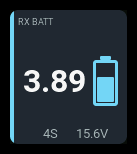
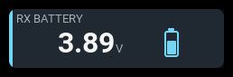
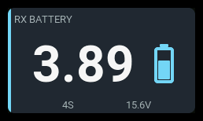

rx-battery
| 1x2 | 2x1 | 2x2 |
|---|---|---|
 |
 |
 |
Displays aircraft-battery voltage from either an EdgeTX cells monitor or
a numeric pack-voltage sensor, such as RxBt. The source must actually
measure the flight battery; regulated receiver supply voltage does not reveal
pack voltage.
The headline always shows two decimals. This is display precision, not a promise of sensor accuracy or resolution. The panel does not infer remaining capacity from voltage.
Settings
| Setting | Default | Meaning |
|---|---|---|
label |
PACK |
Panel heading. |
source |
Cels |
Exact EdgeTX source name; tables are individual cells, numbers are pack voltage. |
reading |
cell |
cell or pack. A cell reading is the table's lowest cell in cells mode and the calculated average in pack mode. |
showPack |
true |
Show alt reading: show pack voltage when cell voltage is primary, or average cell voltage when pack voltage is primary. A preference, shown only when it fits; ignored by the battery visualization. |
showCount |
true |
Show the cells-monitor count or the pack's configured/estimated series count. A preference, shown only when it fits; ignored by the battery visualization. |
showDelta |
false |
Show cell delta: highest minus lowest individual cell voltage, formatted Δ 0.01v. Only valid cells tables can supply it; numeric voltage reserves no delta slot. |
cells |
0 |
Numeric sources only: 0 estimates series count; 1–16 sets it explicitly. Tables supply their own count and ignore this setting. |
cellFull |
4.2 |
Full usable-range voltage, in V/cell. |
cellWarning |
3.6 |
Warning threshold, in V/cell. |
cellCritical |
3.4 |
Critical threshold, in V/cell. |
cellEmpty |
3.2 |
Empty usable-range voltage, in V/cell. |
visual |
battery |
Visualization: battery, bar, or details (stored as none). The battery and bar measure voltage against the usable per-cell range, not remaining charge. |
accent |
cyan |
Semantic accent: cyan, green, amber, or orange. |
The flat editor drawer presents Label, Voltage source, Cell count (0 = auto), Primary reading, Visualization, Show alt reading, Show cell count, and Show cell delta, in that order. Series count remains editable without telemetry and is ignored when the source returns a table. Voltage levels are grouped under Voltage levels, in Full, Warning, Critical, Empty order, with V/cell shown in each label. Full and Empty are hidden while visualization is details. All three supporting-detail toggles are hidden while visualization is battery, because that visualization never shows them; their stored values are kept.
Voltage levels must be coherent: Full > Warning >= Critical >= Empty. Unknown settings and invalid threshold ordering are rejected. Panel size never makes the alternate-reading or cell-count toggles invalid: details that do not fit are dropped quietly (see Visualization and details).
Layout schema and migration
Current layout files use schema version 2. For example:
version: 2
grid:
columns: 4
rows: 4
panels:
- id: flight-pack
type: rx-battery
col: 0
row: 0
colSpan: 2
rowSpan: 2
config:
label: RX battery
source: RxBt
cells: 0
reading: cell
Layouts are upgraded in memory before panel validation/loading. Explicit voltage levels are preserved; omitted values use the defaults above. A brief upgrade notice explains that the migrated layout is not yet saved. Loading never overwrites a layout: use the editor's explicit Save action to persist it as version 2. Newer or malformed layout versions are rejected rather than interpreted with older assumptions.
The central migration registry has one adjacent helper per layout version for both headers and panels. Runtime loading and staged Save apply at most one transition per callback, so future upgrades do not require an unbounded pass through the migration chain in a single callback.
Behavior
Source shape is detected automatically, never guessed from voltage magnitude.
A cells table supplies
the cell count and pack sum. A cell headline uses the lowest valid cell;
alarms always judge that lowest cell, even when reading: pack is selected.
A numeric source supplies total pack voltage. With
cells: 1–16, the panel calculates average cell voltage from pack voltage
and series count. With cells: 0, it estimates count by dividing the first
fresh, valid pack voltage by cellFull and rounding to the nearest integer.
The count is held for that telemetry connection rather than recalculated as
voltage falls; after a disconnect, the next fresh reading starts a new
estimate. An estimated count is marked EST. Estimation assumes the first
reading is near full, so starting the radio mid-flight, a partly charged pack,
load sag, or an unusual chemistry can produce the wrong count. Configure the
known series count when possible. Pack voltage cannot reveal a weak or
unbalanced cell, so alarms judge only its calculated average.
All four voltage levels are in volts per cell. The battery/bar spans
cellEmpty to cellFull; alarm thresholds are separate. cellCritical is checked
before cellWarning. A pack headline is total voltage, while its fill is still
normalized using average volts per cell.
Visualization and details
The cell count, cell delta and secondary reading are supporting details. They are shown only when they fit beside or below the headline without crowding it, and are dropped otherwise rather than reported as a settings problem.
- battery draws the battery glyph and never shows any supporting reading, at any panel size, so the glyph and headline get the space.
- bar draws the usage bar and adds details that fit, in priority order: count, then cell delta, then secondary reading. Secondary is shed first, then delta, and count last. Both footer and side stack are tried before dropping the next lowest-priority detail. If delta cannot fit alongside the count in either placement, a shorter secondary reading can still use the remaining room.
- details (
none) draws no glyph or bar. It shows the alternate enabled available details as text, with the same priority, either in a footer row or, on short wide panels, stacked beside the headline.
The delta glyph uses EdgeTX's native CHAR_DELTA character (the font's custom
U+0088 mapping). The firmware fonts do not require a Unicode Greek-block glyph.
Small panels usually retain only the headline; fit is measured, not span-gated.
Count-row wordings such as NO CELLS,
CELLS ERR, and VOLT ERR use the count slot, so they appear in bar and
details whenever that slot fits, even with showCount off.
States
| State | Condition | Presentation |
|---|---|---|
normal |
Valid, fresh judged voltage above cellWarning |
Reading and visual in their normal colors. |
warning |
Judged voltage at or below cellWarning |
Amber state color, tinted panel, WARN badge. |
critical |
Judged voltage at or below cellCritical |
Red state color, tinted panel, CRIT badge. |
stale |
Retained reading whose source is stale | Last voltage retained, muted presentation, STALE badge. |
unavailable |
No usable headline | --, no unit or battery glyph, N/A badge. |
An empty table shows NO CELLS; an unusable table shows CELLS ERR. Invalid numeric voltage
shows VOLT ERR (in the count slot, when shown). Before any reading arrives,
the count row is blank.
Examples
Cells monitor:
- id: monitored-pack
type: rx-battery
col: 0
row: 0
colSpan: 2
rowSpan: 2
config:
source: Cels
reading: cell
visual: bar
showDelta: true
Pack-voltage source with an explicit series count:
- id: flight-pack
type: rx-battery
col: 0
row: 0
colSpan: 2
rowSpan: 2
config:
source: RxBt
cells: 4
reading: cell